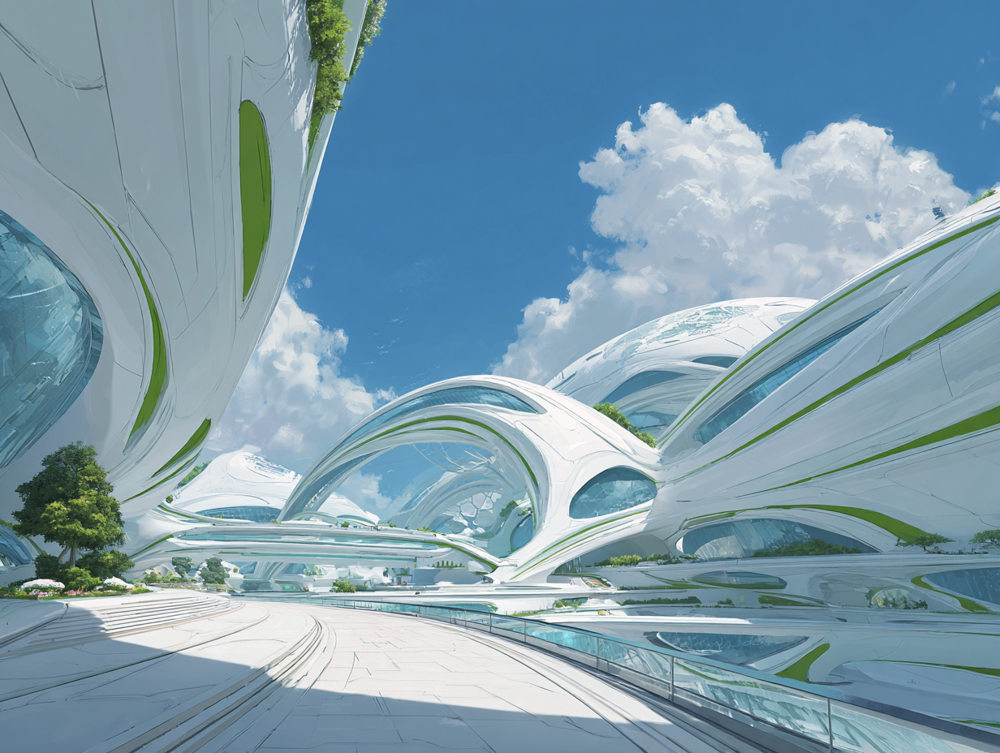
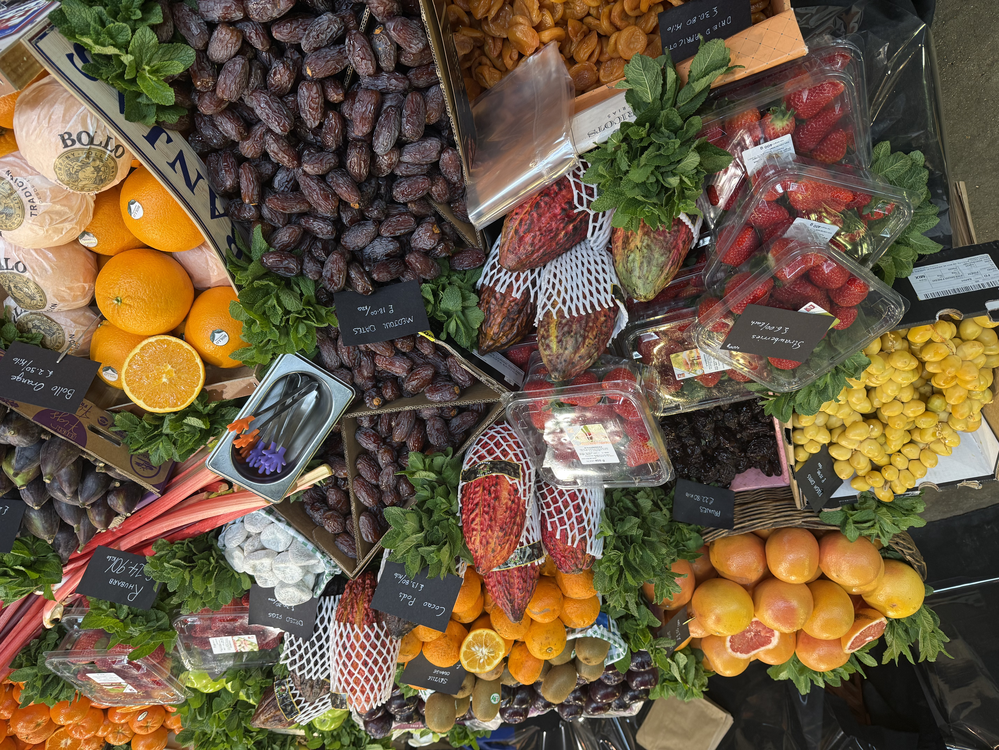
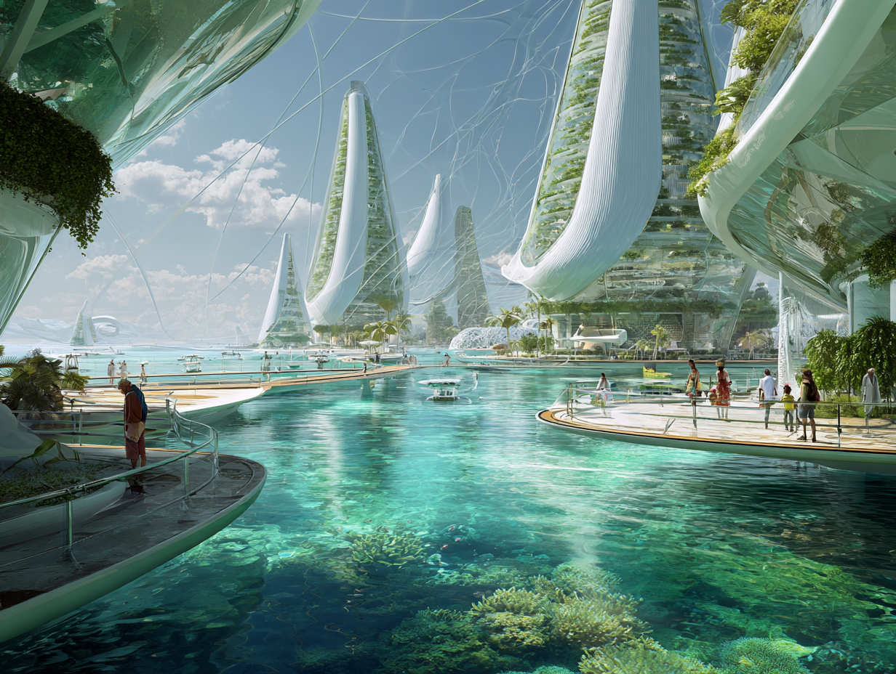
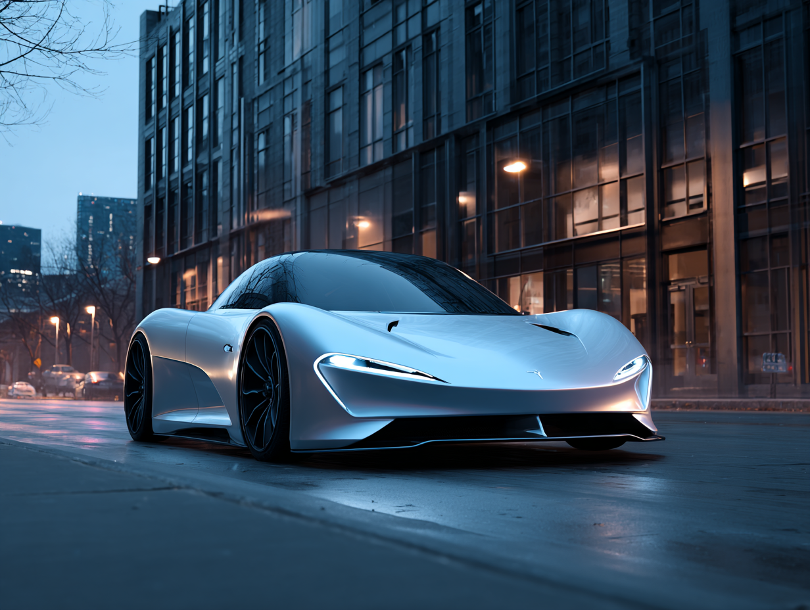
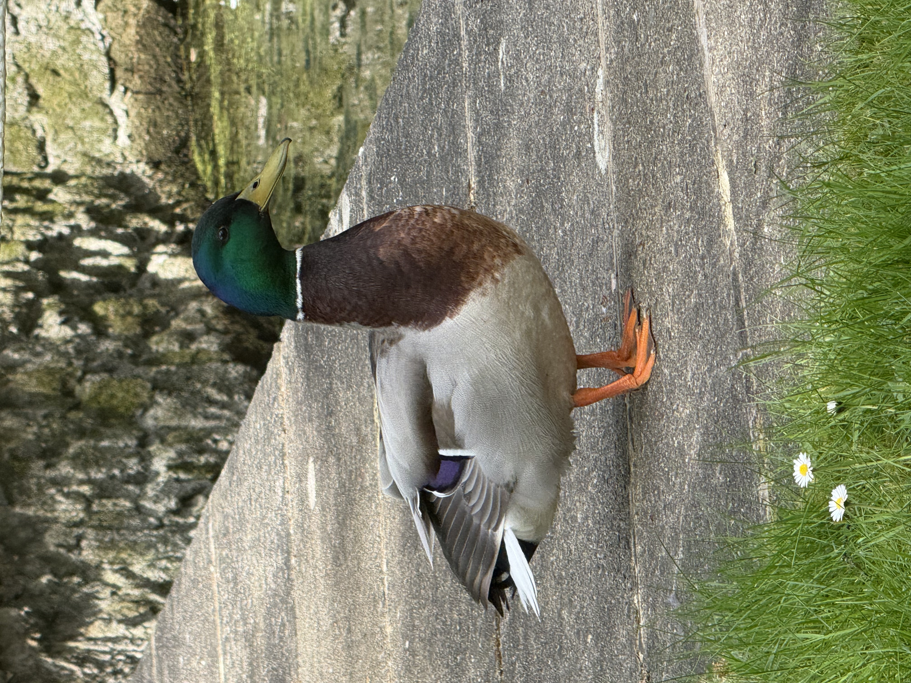

A City Without Traffic Noise
I submitted this as a future memory: a quiet urban morning where streets are filled with wind, water, and slow movement instead of engines.
Collective Future Fragments
This space will collect future memories contributed by visitors. Each fragment becomes part of a growing public archive of imagined worlds.
I submitted this as a future memory: a quiet urban morning where streets are filled with wind, water, and slow movement instead of engines.


I took this at a local fruit market. The colours, textures, and crowded arrangement made everything feel full of life. It makes me feel warm, human, and connected to nature.
I hope there will be small public machines in the future that can automatically detect and clean up dog waste on the streets. It sounds simple, but I think tiny changes like this could make cities cleaner, easier to live in, and a little more thoughtful for everyone.
When I grow up, I want to help create unprocessed food that grows quickly, tastes delicious, and can stay fresh for a very long time without needing heavy packaging or chemical preservation. I think food in the future should be healthier, easier to share, and less wasteful for both people and the planet.


I hope that in the future, languages can be automatically translated and understood instantly, so people from different countries can communicate naturally without fear, confusion, or misunderstanding. I think the world would feel much closer if language was no longer a barrier between people.

I saw this duck standing quietly beside the water one morning. The colours on its feathers looked surprisingly vivid in the sunlight, and for a moment everything around it felt calm and still.